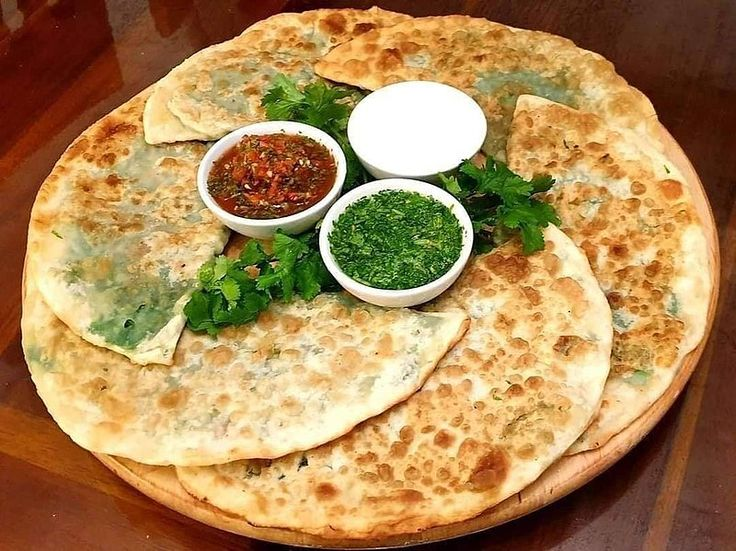

Afghani Pulao
Afghani Pulao, also known as Kabuli Pulao, is Afghanistan’s national dish—a fragrant rice dish made with tender meat, caramelized carrots, raisins, and aromatic spices. It's a centerpiece of Afghan hospitality.
View Recipe

Afghani Bolani
Afghani Bolani is a popular stuffed flatbread, typically filled with mashed potatoes, green onions, or spinach, and pan-fried until golden and crispy. It’s a delicious snack or side dish, often served with yogurt or chutney.
View Recipe
Afghan Chapli Kabab
Chapli Kebab is a flavorful and spicy minced meat patty made with ground beef or lamb, mixed with herbs, spices, onions, and tomatoes. It’s traditionally shallow-fried and enjoyed with naan or rice.
View Recipe